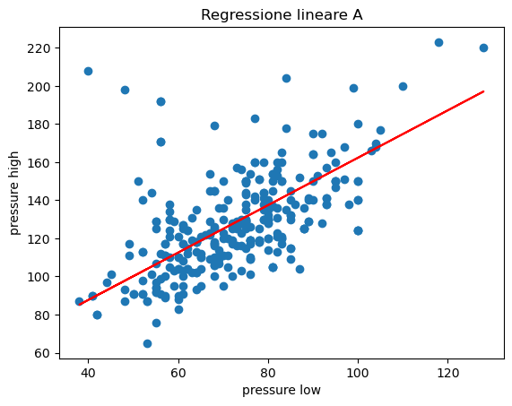
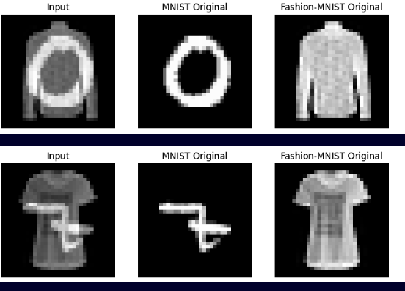
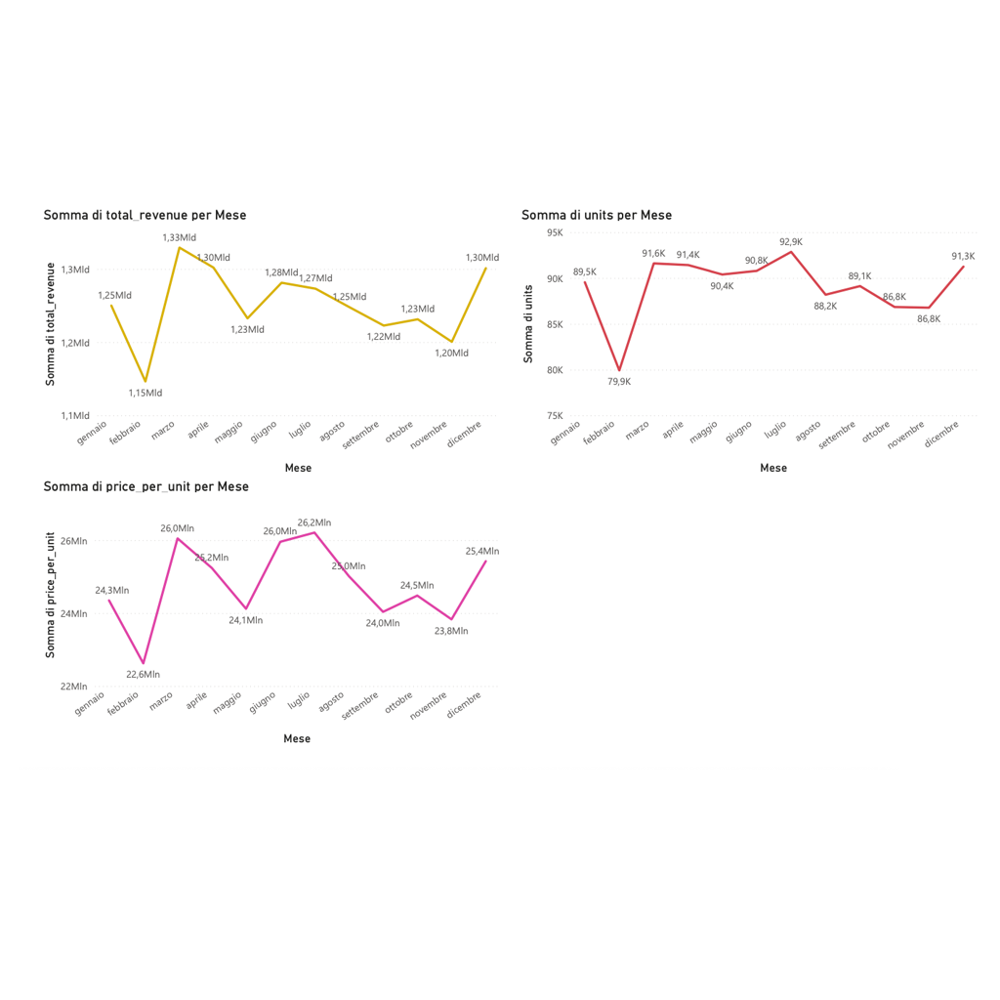
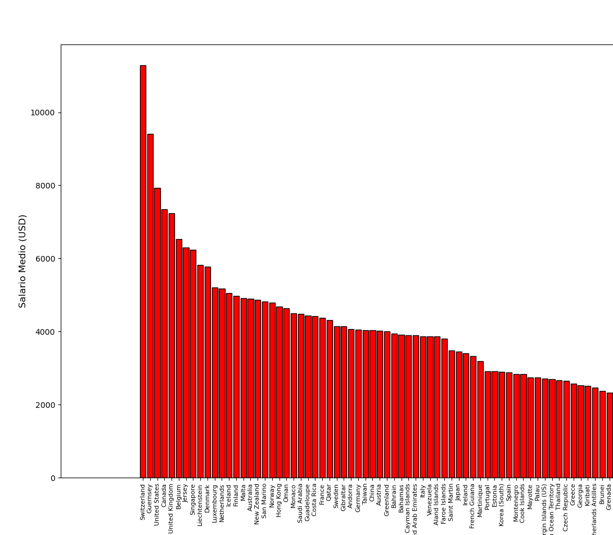
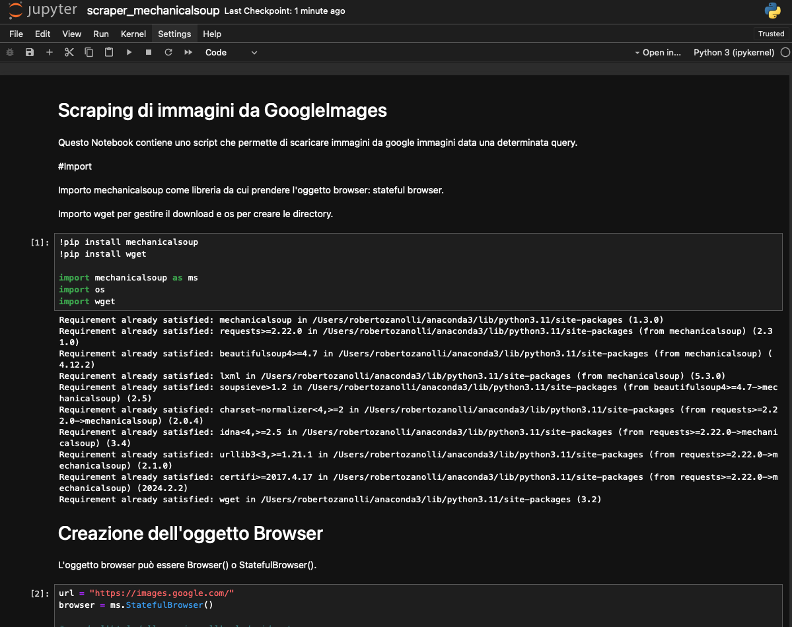
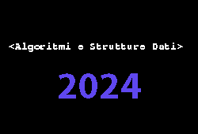
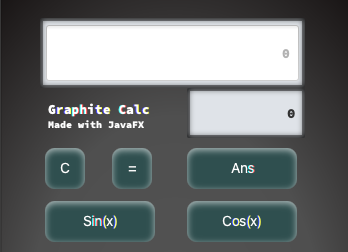

About me
Ciao sono Roberto, uno studente di informatica per il management appassionato di AI e Data Science.
Ho avuto esperienze nell'utilizzo di Python utilizzando strumenti come Pandas, Seaborn e Matplotlib per
interpretare e visualizzare dati complessi e come Scikit-learn e keras per la realizzazione di modelli di machine learning.
Oltre all'analisi dati, ho conoscenze di programmazione Java, di web development (html, css e js) e di realizzazione di siti web con strumenti no-code come WordPress.
Sono sempre alla ricerca di nuove sfide e opportunità di crescita.
Data related projects
In questa sezione verranno elencati i progetti inerenti al mondo data e machine learning.
Principali tecnologie: Python (Pandas, Numpy, Matplotlib, Seaborn e Scikit-learn).

Heart Disease Classification (Progetto Universitario)
Semplice modello di classificazione binaria per prevedere l'insorgenza di un attacco cardiaco.

Separazione di immagini con CNN (Progetto Universitario)
Separazione di immagini sovrapposte mediante una CNN basata su encoder-decoder.

European corporates sales analysis
Analisi delle vendite di una azienda fittizia con clienti europei. Il dataset è stato generato randomicamente.
Mushroom Classification
Semplice modello di classificazione binaria per prevedere se un fungo e' commestibile o meno.

Global Salary Analysis
Notebook che cerca di trarre informazioni utili sulla distribuzione salariale globale.

Scraping di immagini con MechanicalSoup
Notebook contenente uno script che effettua lo scraping da google immagini con MechanicalSoup data una query.
Coding related projects
In questa sezione verranno elencati progetti di programmazione non inerenti al mondo data.

DSA 2023/2024
(Progetto Universitario)
Progetto per l'esame di algoritmi e strutture dati.

GraphiteCalculator
Semplice calcolatrice realizzata con JavaFX (+Maven).
Nelle release è presente il jar eseguibile multipiattaforma.